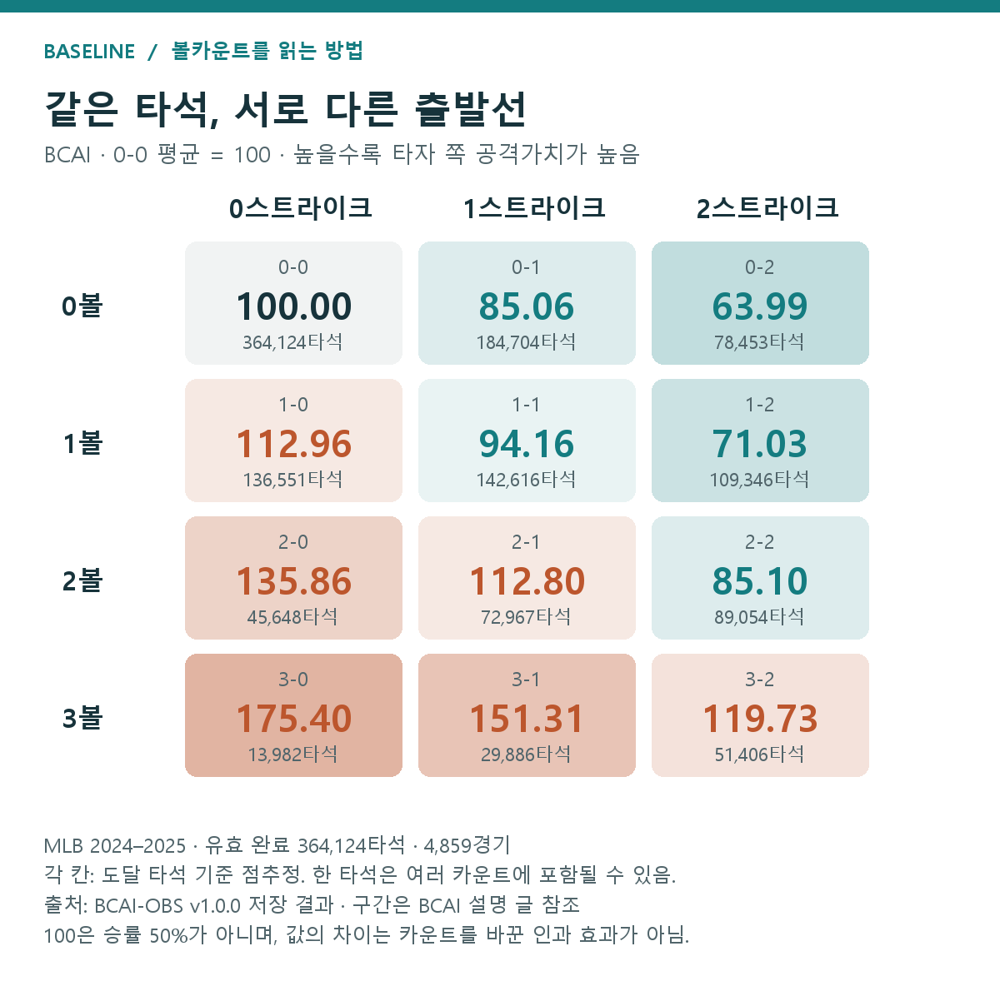
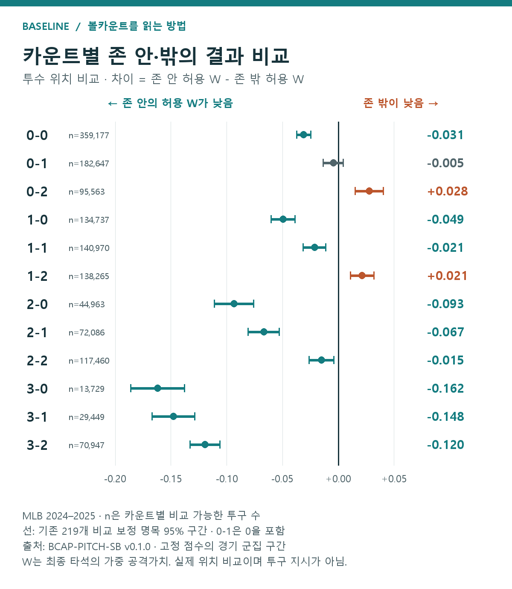
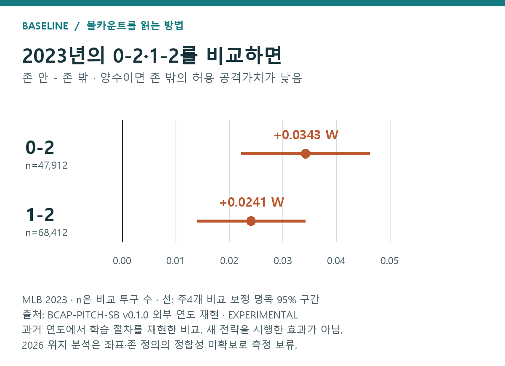
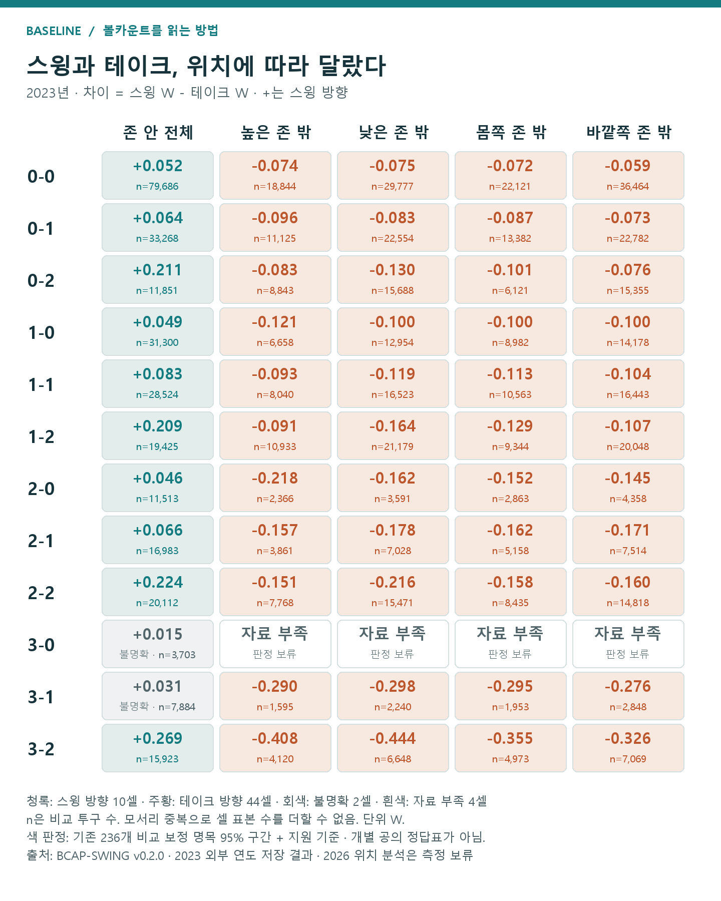
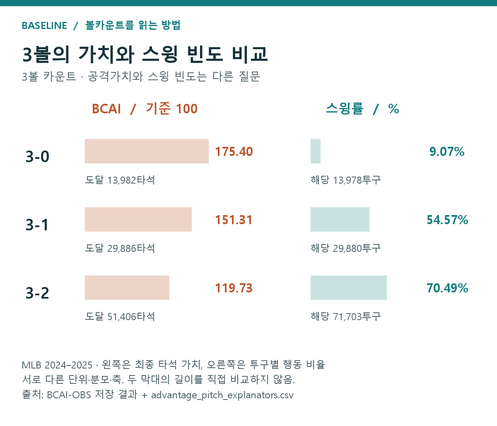

스트라이크는 언제나 좋은 공일까?
이 글의 목차 — 결과·방법·해석
- 먼저 보는 결과 — 이 글에서 확인한 네 가지
- 1. 카운트 가치 — 0-2는 낮고 3-0은 높았다
- 초구 타율이 높으면 초구에 쳐야 할까?
- 낮은 타율에는 어떤 아웃이 들어 있을까?
- 안타뿐 아니라 볼넷과 장타도 세어 보자
- 열두 칸의 표는 어디부터 읽으면 될까?
- 볼이 하나 더 있는 카운트의 평균은 얼마나 다를까?
- 한 번의 무게와 자주 만나는 정도
- 2. 투수 위치 — 0-2·1-2에서는 존 밖 방향이 남았다
- 평균부터 비교하면 무엇이 섞일까?
- 점과 가로선은 각각 무엇을 말할까?
- 다른 해로 옮겨서 다시 비교해 보자
- 어떤 결과들이 이 차이를 만들었을까?
- 선행 글에서 말하는 ‘버리는 공’은 같은 공일까?
- 3. 타자 행동 — 위치별 결과와 3볼의 행동은 달랐다
- 결과가 나쁘면 판단도 나빴던 걸까?
- 위치를 다섯 구역으로 나눴다
- 색을 보기 전에, 한 칸을 읽어 보자
- 3볼에서는 얼마나 자주 휘둘렀을까?
- ‘2스트라이크니까 보호한다’에서 한 걸음 더
- 4. 구종 — 카운트별 일반적인 우열을 확정하지 못했다
- 불명확한 결과를 얻은 비교 방식
- 좋은 공만 반복하면 상대도 그대로일까?
- 상대의 선택까지 넣으면 무엇을 계산할 수 있을까?
- 한 공의 판단을 타석 끝까지 연결하면?
- 같은 1-1이면 지나온 순서는 중요하지 않을까?
- 5. 시행착오 — 분모와 보정을 고치고 미확인 계산은 남겼다
- 같은 이름의 비율인데 분모가 달랐다
- 계산을 고친 다음에도 예측력을 따로 확인했다
- 분석의 분류와 독자가 떠올리는 장면을 맞췄다
- 다른 해의 자료를 같은 자로 잴 수 있는지 확인했다
- 이유를 분해하는 계산은 어디까지 만들었나?
- 6. 다음 0-2 — 존 밖 결과와 투구 지시는 구별한다
- 지표와 분석을 더 읽고 싶다면
- 이 글에서 사용한 참고문헌
0-2·1-2에서는 존 밖 방향이 남았다. 카운트의 가치와 다음 공의 비교를 함께 읽기
이번 MLB 분석에서는 0-2·1-2의 실제 존 밖 투구가 더 낮은 보정 공격가치와 연결됐다. 타자 행동은 위치에 따라 방향이 갈렸고, 구종만으로는 카운트별 일반적인 우열을 정하지 못했다. 먼저 결과를 정리한 뒤, 이 숫자가 무엇이며 어떻게 얻었는지 풀어 보겠다.
분석에는 두 도구를 썼다. BCAI는 지금 카운트의 형편을, BCAP는 그 카운트에서 위치·구종·스윙 여부에 따른 결과 차이를 보여준다. 둘 다 타석의 최종 결과에 볼넷·안타·장타별 가중치를 붙인 공격가치 W를 사용한다. 타자는 높은 W, 투수는 낮은 허용 W가 유리한 방향이다.
| 사용한 도구 | 이 글에서 하는 일 | 숫자를 읽는 법 |
|---|---|---|
| BCAI · 카운트 유불리 지수 | 그 카운트를 거친 타석의 평균 공격가치를 시작점과 비교 | 시작 평균=100. 높을수록 타자에게 유리한 방향 |
| BCAP · 행동별 보정 비교 | 같은 카운트에서 선수·상황을 맞춰 실제 위치·구종·스윙 여부 비교 | 최종 타석 W 차이. 타자는 큰 값, 투수는 작은 허용 값이 유리 |
위 표는 자체 분석 도구의 역할 설명이다. BCAI 계산과 결과 · BCAP 계산과 결과. 아래 각 절에서도 어떤 도구를 사용했는지 함께 표시한다.
읽는 순서: 결과 요약 → 결과표·그림 → 계산 방법 → 이유와 해석 범위. 청록색은 자체 분석 결과, 보라색은 참고문헌, 갈색은 해석 메모다. 큰 제목은 주제, 작은 제목은 그 안의 설명 단계다.
먼저 보는 결과 — 이 글에서 확인한 네 가지
| 구분 | 확인한 결과 | 비교 범위 |
|---|---|---|
| 카운트 가치 · BCAI | 0-2는 63.99, 3-0은 175.40. 1-1은 94.16, 3-2는 119.73 | 2024·2025 유효 완료 타석, 시작 평균=100 |
| 투수 위치 · BCAP | 0-2·1-2는 존 밖, 다른 9카운트는 존 안의 허용 W가 낮음 | 2024·2025. 0-1 불명확, 2023년 핵심 두 카운트 재현 |
| 타자 행동 · BCAP | 존 안 10카운트는 스윙, 비교 가능한 존 밖 44칸은 테이크 방향 | 2023년. 존 안 3-0·3-1 불명확, 존 밖 3-0 네 칸 자료 부족 |
| 구종 · BCAP | 외부 연도 96개 보고 비교 중 92개는 차이 불명확 | 2023·2026년 9월 7일까지. 일반적 구종 우열 미확정 |
기존 저장 결과의 요약이다. 각 절의 그림·표에 표본·단위·구간과 출처를 표시했다. 2026년 위치 비교는 측정 기준 문제로 보류했다.
1. 카운트 가치 — 0-2는 낮고 3-0은 높았다
1.1초구 타율이 높으면 초구에 쳐야 할까?
초구 종료 타율만으로 초구 스윙의 이점을 판단할 수 없다. 끝난 타석과 거친 타석의 분모가 다르기 때문이다.
카운트별 타율을 보면 먼저 확인할 것이 있다. 그 카운트에서 끝난 타석의 성적인가, 그 카운트를 거친 타석의 최종 성적인가?
예를 들어 초구에 파울을 치고, 이후 삼진을 당한 타석을 생각해 보자. 타자는 초구부터 스윙했다. 그런데 ‘초구 종료 타율’에는 이 실패가 들어가지 않는다. 초구에 끝난 공식 타수와 그중 안타로 계산하기 때문이다. 사구나 희생플라이도 타율의 타수 분모에는 들어가지 않는다.
| 질문 | 포함하는 기록 | 그 숫자로 알 수 없는 것 |
|---|---|---|
| 0-0에서 끝난 타수는 잘 쳤나? | 초구에 끝난 공식 타수와 그중 안타 | 초구 스윙 뒤 타석이 계속된 경우까지 포함한 성과 |
| 0-0을 거친 타석은 어떻게 끝났나? | 시작부터 이후 결과까지 연결한 타석 | 초구 스윙과 테이크를 바꿨을 때의 효과 |
1.2낮은 타율에는 어떤 아웃이 들어 있을까?
2스트라이크 종료 타율에는 삼진이 들어가므로, 접촉 성적과 종료 방식이 함께 달라진다.
여기서 잠깐, 두 종류의 실패를 나눠 보자. 공을 쳤지만 잡힌 아웃과, 공을 인플레이로 보내지 못한 삼진이다. 0스트라이크나 1스트라이크에서 타석이 끝났다면 일반적인 삼진은 들어갈 수 없다. 반면 2스트라이크 종료 기록에는 삼진이 들어온다. 그러니 종료 카운트별 타율을 나란히 놓았을 때는, 타자가 얼마나 잘 맞혔는지와 어떤 방식으로 타석이 끝났는지가 함께 달라진다.
이 차이를 생각하지 않으면 “두 스트라이크가 되기 전에 끝낸 타석은 타율이 높다”에서 곧바로 “일찍 휘두르면 성적이 좋아진다”로 넘어가기 쉽다. 하지만 앞의 문장은 이미 끝난 타석의 분류이고, 뒤의 문장은 선택을 바꿨을 때의 결과에 관한 주장이다. 중간에 확인해야 할 질문이 남아 있다.
삼진을 피하고 싶다는 생각은 타당하다. 다만 일찍 친 약한 땅볼도 아웃이고, 기다리면 볼넷이나 더 좋은 공의 가능성이 생긴다. 반대로 기다리다 좋은 공을 놓칠 수도 있다.
삼진의 위협은 일찍 오는 좋은 공을 놓치지 말아야 할 이유이지, 나쁜 공까지 일찍 쳐야 한다는 근거는 아니다. 초구 종료 타율 하나에서 ‘항상 일찍 쳐라’도, ‘항상 기다려라’도 나오지 않는다.
1.3안타뿐 아니라 볼넷과 장타도 세어 보자
BCAI는 안타 수 대신 볼넷·안타·장타에 가중치를 붙인 최종 타석 W를 사용한다.
이를테면 0-2를 거친 두 타석이 있다고 하자. 하나는 바로 삼진으로 끝났고, 다른 하나는 끈질기게 공을 골라 볼넷을 얻었다. 우리가 알고 싶은 것이 “0-2에 놓인 타석의 형편”이라면 둘 다 살펴봐야 한다. 바로 끝난 타석만 세면 두 번째 타석의 회복 과정은 사라진다.
그래서 이번에는 해당 카운트를 한 번이라도 거친 타석을 모으고, 그 타석이 마지막에 무엇을 남겼는지 보기로 했다. 안타가 아니어도 볼넷이면 가치가 있고, 같은 안타라도 단타와 홈런의 가치는 다르다. 이 차이를 한 척도에 담아야 열두 카운트를 비교할 수 있다.
이번에는 타율 대신 타석의 최종 결과에 점수를 붙였다. 볼넷, 단타, 2루타, 홈런의 공격가치를 다르게 반영한 W다. 연도별 wOBA 가중치를 사용했다.
BCAI는 각 카운트를 거친 타석의 평균 W를 타석 시작 평균과 비교한 지수다. 기준은 100. 120이면 시작 평균보다 가중 공격가치가 20% 높았다는 뜻이다.
1.4열두 칸의 표는 어디부터 읽으면 될까?
BCAI는 0-2가 최저, 3-0이 최고였고, 1-1은 시작 평균보다 낮았다.
먼저 0-0을 찾자. 모든 타석이 시작하는 자리이므로 이 칸을 100으로 고정했다. 그다음에는 한 번에 한 방향씩 이동하면 된다. 스트라이크 수를 그대로 두고 볼 수만 늘려 보거나, 볼 수를 그대로 두고 스트라이크 수만 늘려 보는 것이다.
칸 안의 타석 수도 함께 보자. 자주 도달하는 카운트와 드물게 도달하는 카운트는 관찰 기회의 크기가 다르다. 아래 그림은 그 두 정보를 나란히 놓았다. 큰 숫자는 공격가치 지수, 작은 타석 수는 그 값을 만든 기록의 규모다.

그림 1. MLB 2024·2025 정규시즌, 유효 완료 364,124타석·4,859경기. 각 칸은 해당 카운트를 한 번 이상 거친 타석의 최종 결과로 계산했다. 한 타석은 여러 카운트에 포함될 수 있다. 점추정이며 구간은 BCAI 설명 글에 제시했다. 출처: BCAI-OBS v1.0.0 저장 결과.
표는 예상과 익숙하지 않은 결과를 함께 보여준다.
0-2는 63.99로 가장 낮고, 3-0은 175.40으로 가장 높다. 같은 스트라이크 수라면 볼이 늘수록, 같은 볼 수라면 스트라이크가 줄수록 공격가치가 높았다.
하지만 1-1은 100이 아니라 94.16이다. 볼 하나와 스트라이크 하나를 주고받았다고 타석 시작점으로 돌아오지는 않는다. 3-2도 119.73이다. 삼진과 볼넷이 모두 한 구 앞에 있어도 두 결과의 가능성과 가치가 대칭인 것은 아니다.
3-0의 높은 가치는 특히 볼넷을 빼고 설명하기 어렵다. 이 카운트에 도달한 유효 타석의 60.99%가 최종적으로 비고의 볼넷으로 끝났다.
비슷한 값도 눈에 띈다. 1-0은 112.96, 2-1은 112.80이다. 0-1은 85.06, 2-2는 85.10이다. 두 카운트의 숫자가 가까운 이유와 다음 공의 판단은 따로 살펴봐야 한다. 2-2의 다음 스트라이크는 삼진으로 끝날 수 있지만, 0-1에서는 0-2로 이어진다.
평균적으로 비슷한 상황이어도 다음 공에 걸린 것은 다르다.
1.5볼이 하나 더 있는 카운트의 평균은 얼마나 다를까?
2024년 도달 타석의 평균 W 간격은 0-2와 1-2 사이보다 2-2와 3-2 사이에서 컸다. BCAI의 원래 평균값을 뺀 보조 결과다.
예를 들어 투수가 0-2에서 볼 하나를 허용하는 장면과 2-2에서 볼 하나를 허용하는 장면을 떠올려 보자. 둘 다 볼은 하나 늘지만, 뒤의 장면에서는 타자가 볼넷 직전까지 간다. “볼 하나”라는 말만으로 두 상황의 무게를 같게 볼 수 있을까?
우선 가장 단순한 것부터 보자. 볼이 하나 더 있는 카운트에 도달한 타석들의 평균은 얼마나 달랐을까. 여기서는 지수 100을 잠시 내려놓고, 지수를 만들기 전의 평균 W로 돌아간다. 같은 자로 재야 두 평균 사이의 간격을 바로 뺄 수 있기 때문이다.
이 차이를 더 잘 보려고 카운트별 원래 W의 차이도 정리했다. 2024년 자료에서 0-2 도달 집단의 평균 W와 1-2 집단의 평균 W는 약 0.024 차이였다. 2-2와 3-2 집단의 격차는 약 0.107이었다.
| 비교한 상태 평균 | 앞 상태 → 뒤 상태의 W | 차이 |
|---|---|---|
| 0-2 집단 → 1-2 집단 | 0.1979 → 0.2217 | +0.0238 W |
| 2-2 집단 → 3-2 집단 | 0.2650 → 0.3719 | +0.1069 W |
MLB 2024. 각 집단은 순서대로 39,534·54,844·44,425·25,658타석이다. 서로 다른 카운트 도달 집단의 평균 차이이며 새 구간은 계산하지 않았다. 출처: BCAI-STATE-DELTA v0.1.0.
1.6한 번의 무게와 자주 만나는 정도
한 번의 가치 차이와 그 상황을 만나는 빈도는 서로 다른 중요성 기준이다.
중요하다는 말에는 두 뜻이 들어갈 수 있다. 한 번 마주쳤을 때 결과가 크게 갈리는 상황이 중요할 수 있고, 차이는 작아도 매 타석 만나는 상황이 중요할 수 있다. 예컨대 초구는 모든 타석에 있지만, 1-1은 그 카운트까지 이어진 타석에만 있다. 코칭에서 어느 상황을 강조할지 생각하려면 두 기준을 구분해야 한다.
2. 투수 위치 — 0-2·1-2에서는 존 밖 방향이 남았다
이제 처음 질문으로 돌아가 보자. 이렇게 다른 출발선에서 공이 어디에 들어왔을 때 투수가 더 낮은 공격가치를 허용했을까.
여기서부터는 BCAP를 사용했다. 단순히 존 안과 밖의 평균을 비교하면, 서로 다른 투수와 타자, 상황이 섞인 차이까지 결과에 들어간다. BCAP는 기록된 선수·경기 조건을 보정하고, 두 행동을 비교할 자료가 있는 범위에서 평균 W를 계산한다. 자세한 절차는 BCAP 설명 글에 정리했다.
용어부터 분명히 하자. 여기서 존 안·밖은 실제 공 중심의 위치다. 존 밖 공에 헛스윙해도 ‘존 밖’이고, 존 안 공이 홈런이 되어도 ‘존 안’이다. 심판의 스트라이크·볼 판정이나 투수가 겨냥한 위치를 뜻하지 않는다.
2.1평균부터 비교하면 무엇이 섞일까?
BCAP는 위치 차이에 선수·상황 구성의 차이가 섞이는 문제를 줄이려고 보정했다.
존 밖에 던진 기록이 더 좋게 나왔다고 가정해 보자. 그 공을 주로 던진 투수들이 원래 뛰어난 선수였다면, 위치의 차이라고 생각한 숫자에는 선수의 차이도 들어 있다. 상대 타자나 경기 상황이 달라도 같은 문제가 생긴다.
그래서 BCAP에서는 비교 대상의 선수·상황 구성을 맞춘 다음, 존 안과 존 밖의 예상 결과를 각각 구했다. 아래에서 보는 것은 그 두 값의 차이다. 한쪽이 더 좋은 선수들을 많이 포함했다는 이유만으로 유리해지는 일을 줄이려는 절차다.
2.2점과 가로선은 각각 무엇을 말할까?
점은 존 안−존 밖의 보정 W 차이, 가로선은 그 차이의 불확실성이다.
그림의 가운데 세로선은 두 값의 차이가 0인 자리다. 계산은 존 안의 W에서 존 밖의 W를 빼는 순서로 했다. 점이 오른쪽에 있으면 존 안이 더 큰 공격가치를 허용했다는 뜻이므로 투수에게는 존 밖 쪽이 좋은 방향이다. 왼쪽이면 반대로 읽는다.
점 하나만 보고 끝내지 말고 가로선도 보자. 선이 0을 가로지르면 이번 자료와 계산으로는 어느 쪽이 낮은지 분명하게 구별하지 못했다. 앞서 요약한 방향을 점과 구간에서 함께 확인하면 된다.

그림 2. MLB 2024·2025 개발 결과. 가로축은 ‘존 안−존 밖’의 보정 W 차이다. 왼쪽이면 존 안, 오른쪽이면 존 밖에서 허용 W가 낮았다. 점은 추정값, 선은 기존 219개 비교를 보정한 명목 95% 구간이다. n은 비교 가능한 투구 수다. 출처: BCAP-PITCH-SB v0.1.0. 전체 학습 변동을 모두 포함하는 구간은 아니다.
열두 카운트 가운데 아홉 개는 존 안의 허용 W가 낮았다. 0-1은 차이가 불명확했다. 나머지 두 개, 0-2와 1-2에서는 존 밖이 낮았다.
2024·2025의 0-2에서 존 안은 약 0.222 W, 존 밖은 0.194 W였다. 1-2에서는 각각 약 0.240 W와 0.218 W였다. 이 척도에서는 타자의 공격가치가 낮을수록 투수에게 좋은 방향이다.
2.3다른 해로 옮겨서 다시 비교해 보자
2023년에도 0-2·1-2의 존 밖 방향이 남았다.
같은 패턴이 다른 연도에도 남을까. 2023년 자료에 같은 학습 절차를 적용했다.

그림 3. MLB 2023의 과거 연도 재현. 0-2는 47,912투구, 1-2는 68,412투구가 비교에 포함됐다. 차이는 각각 +0.034266 W, +0.024117 W. 주요 4개 비교를 보정한 구간은 각각 [+0.022304, +0.046228], [+0.014006, +0.034228] W다. 출처: 기존 BCAP 외부 연도 결과. 개발 그림과 다중비교 보정 범위가 다르다.
두 카운트 모두 같은 방향이 남았다. 구간의 하한도 분석에서 미리 정한 참고선인 0.01 W보다 높았다. 이 정도면 “0-2의 존 밖 공은 아무 의미 없이 낭비되는가?”라는 질문에, 적어도 관찰 자료에서는 그렇지 않은 패턴이 있었다고 답할 수 있다.
2.4어떤 결과들이 이 차이를 만들었을까?
볼의 비용·헛스윙·타구 위험이 함께 작용할 수 있지만, 각 원인의 기여도는 아직 분해하지 않았다.
그렇다면 왜 그랬을까. 0-2에서 볼이 되면 1-2로 이어지고, 타자가 따라 나오면 헛스윙이나 불리한 접촉이 생길 수 있다. 앞서 본 상태 차이는 이런 상충 관계를 이해하는 배경이 된다.
2.5선행 글에서 말하는 ‘버리는 공’은 같은 공일까?
선행 글들의 ‘버리는 공’은 포함하는 위치 범위가 다르다.
여기서 관련 글을 찾아 읽다 보면 ‘waste pitch’라는 표현을 만나게 된다. 우리말로는 보통 버리는 공이라고 옮기지만, 이름이 같다고 자료의 분류도 같으리라고 생각하면 곤란하다. 존의 경계를 조금 벗어난 슬라이더와 처음부터 방망이가 닿기 어려운 공은 모두 일상적으로 볼이라고 불릴 수 있다. 하지만 두 종류를 묶느냐, 나누느냐에 따라 연구의 질문은 달라진다.
3. 타자 행동 — 위치별 결과와 3볼의 행동은 달랐다
투수에게 좋았던 존 밖 공은 타자가 어떻게 반응했느냐와도 맞물린다.
존 밖 공을 쳐 안타가 되면 좋은 판단이었을까. 존 안 공을 잘 쳤는데 야수 정면으로 가면 나쁜 판단이었을까. 한 번의 결과만으로 선택을 평가하기는 어렵다. 스윙했을 때와 지켜봤을 때 생길 수 있는 결과를 함께 생각해야 한다.
3.1결과가 나쁘면 판단도 나빴던 걸까?
판단은 한 번의 안타·아웃보다 선택 뒤 가능한 결과와 그 확률을 함께 봐야 한다.
좋은 판단을 해도 한 번의 결과는 나쁠 수 있다. 반대로 나쁜 공을 쳤는데 운 좋게 안타가 될 수도 있다. 그러니 판단을 평가하려면 “이번에 무엇이 나왔나”에 더해 “이 선택에서 어떤 결과들이 얼마나 자주 나올 수 있었나”를 봐야 한다.
지켜보면 볼이나 스트라이크 판정으로 갈 수 있다. 휘두르면 헛스윙하거나 공에 닿을 수 있고, 닿은 뒤에도 여러 결과가 기다린다. 이처럼 선택 다음에 생길 일을 가지로 나누면, 한 번의 안타나 아웃만으로 판단을 평가하는 데서 한 걸음 벗어날 수 있다.
3.2위치를 다섯 구역으로 나눴다
BCAP 타자 결과는 존 안 전체와 높은·낮은·몸쪽·바깥쪽 존 밖으로 구분한다.

그림 4. 타자 기준으로 좌우를 맞춘 설명용 도식이며 실제 표본을 그린 그림은 아니다. ‘존 안’은 존 안 전체다. 높은 몸쪽처럼 모서리에 있는 공은 두 존 밖 보고 구역에 함께 들어간다. 출처: BCAP-SWING v0.2.0의 구역 정의.
분석 과정에서 독자에게 보여줄 구역은 존 안 전체와 높은·낮은·몸쪽·바깥쪽 존 밖으로 정리했다. 기존 보고서의 ‘가운데’가 스트라이크존 한가운데만 뜻하는 것처럼 읽히지 않도록, 여기서는 존 안 전체라고 썼다.
이 구역 안에서 스윙한 기록과 지켜본 기록을 비교했다. 카운트가 같아도 공이 온 곳에 따라 모습이 달라질지, 2023년 결과를 펼쳐 보자. 개발 자료와의 연결은 그림을 읽은 뒤에 확인하겠다.
3.3색을 보기 전에, 한 칸을 읽어 보자
각 칸은 BCAP의 스윙−테이크 W 차이다. 양수는 스윙, 음수는 테이크 방향이며 빈칸은 자료 부족이다.
아래 표에서는 카운트 하나와 구역 하나를 고르면 한 칸이 정해진다. 그 칸의 숫자는 스윙했을 때의 W에서 지켜봤을 때의 W를 뺀 값이다. 앞의 투수 그림과 달리 이번에는 큰 W가 좋은 타자의 관점이다. 양수면 스윙, 음수면 테이크 쪽을 가리킨다.
색은 방향뿐 아니라 비교의 불확실성도 담는다. 회색은 어느 쪽인지 분명하지 않은 칸이고, 흰색은 두 선택을 견줄 자료가 부족한 칸이다. 이 둘을 나눈 뒤에야 “어느 카운트에서 무엇이 보였나”를 말할 수 있다. 우선 존 안 열을 위에서 아래로 읽고, 다음에 존 밖 네 열을 살펴보자.

그림 5. MLB 2023. 각 값은 ‘스윙−테이크’의 보정 최종 W 차이이며 n은 비교 투구 수다. 청록·주황은 보정 구간까지 한 방향인 셀, 회색은 구간이 0을 포함한 셀, 흰색은 비교 지원 기준 미달이다. 기존 236개 비교 보정 구간을 사용했다. 모서리 중복으로 셀의 n을 합산할 수 없다. 출처: BCAP-SWING v0.2.0 외부 연도 결과.
존 안은 열두 카운트 모두 스윙 쪽 점추정이었다. 구간까지 같은 방향인 것은 열 개였고, 3-0과 3-1은 불명확했다.
개발 자료인 2024·2025에서도 존 안 열두 카운트의 점추정은 스윙 쪽이었다. 그때 불명확했던 것은 3-0이었다. 큰 방향과 불확실한 칸을 따로 보면, 두 시기의 모습이 얼마나 닮았고 어디가 달랐는지도 구별할 수 있다.
존 밖은 48개 보고 셀 중 비교 기준을 통과한 44개 모두 테이크 쪽이었다. 나머지 네 개는 3-0의 존 밖 구역으로, 자료 부족 때문에 판정을 보류했다.
3.43볼에서는 얼마나 자주 휘둘렀을까?
3-0은 BCAI가 175.40으로 높았지만 실제 스윙률은 9.07%였다. 상태 가치와 행동 빈도는 같은 질문이 아니다.
앞에서는 어느 선택의 결과가 높았는지를 비교했다. 이번에는 잠시 질문을 바꿔, 타자들이 실제로 어떤 선택을 얼마나 했는지 보자. 유리한 카운트에서 더 자주 휘둘렀을까. 이를 알아보려고 3-0, 3-1, 3-2를 나란히 놓았다.
왼쪽 그림부터 읽자. 그 카운트를 거친 타석들의 최종 공격가치다. 오른쪽은 각 카운트의 실제 공 가운데 방망이를 낸 비율이다. 두 그림의 막대 길이를 서로 재기보다, 각 그림 안에서 카운트에 따른 변화 방향을 비교하면 된다.

그림 6. MLB 2024·2025. 왼쪽은 도달 타석의 최종 공격가치, 오른쪽은 구종이 확인된 실제 투구의 스윙 비율이다. 자동 볼·스트라이크 등을 제외한 별도 투구 표본이므로 도달 타석 수와 일치하지 않는다. 각 분모는 그림에 표시했다. BCAI와 스윙률은 단위가 다르므로 두 막대의 길이를 직접 비교하지 않는다. 출처: BCAI-OBS 결과 및 기존 투구 집계.
3-0의 BCAI는 175.40이지만 스윙률은 9.07%였다. 3-1에서는 54.57%, 3-2에서는 70.49%까지 높아졌다.
3.5‘2스트라이크니까 보호한다’에서 한 걸음 더
같은 2스트라이크에도 볼넷까지 남은 거리가 달라 타자의 선택 조건이 달라진다.
이번에는 스트라이크 수를 두 개로 고정해 보자. 루킹 삼진의 위험이 있다는 점은 네 카운트에 공통이다. 하지만 0-2에서 볼을 골랐을 때와 3-2에서 볼을 골랐을 때 타자가 얻는 것은 다르다. 전자는 승부를 이어 가고, 후자는 볼넷으로 타석을 끝낸다. 같은 삼진 위협만으로 모든 판단을 설명할 수 있는지 묻게 된다.
4. 구종 — 카운트별 일반적인 우열을 확정하지 못했다
위치만큼 익숙한 질문이 구종이다. 3-2에서는 포심이 좋을까. 0-2에서는 변화구가 좋을까.
먼저 분류부터 다시 점검했다. 포심·싱커·커터를 묶은 패스트볼 계열과 나머지 구종을 비교한 뒤, 포심만 떼어 비포심과 비교했다. 두 번째 비교에서 싱커와 커터는 비포심에 들어간다. 둘을 모두 ‘직구 대 변화구’라고 부르면 다른 질문이 같은 이름 아래 섞인다.
| 비교 | 한쪽 | 다른 쪽 |
|---|---|---|
| 패스트볼 계열 비교 | 포심·싱커·커터 | 그 밖의 분석 허용 구종 |
| 포심 비교 | 포심 | 싱커·커터 등을 포함한 비포심 |
4.1불명확한 결과를 얻은 비교 방식
두 구종 분류와 자체·공통 표본으로 비교했지만, 외부 연도 대부분의 차이는 불명확했다.
먼저 각 분류 안에서 양쪽 구종을 비교할 수 있는 투구들을 골랐다. 이어 두 분류가 모두 비교 가능한 공통 표본에서도 확인했다. 분류를 바꿨을 때 결과가 달라지면, 구종을 묶는 방식 때문인지 비교에 남은 투구들이 달라졌기 때문인지 함께 살펴보기 위해서다.
점추정이 한쪽을 가리켜도 구간이 0을 포함하면 방향을 확정하지 않았다. 앞서 요약한 ‘불명확’은 이 기준에 따른 결과다.
2023년과 2026년 9월 7일까지의 자료에서 두 분류와 자체·공통 비교 표본을 살폈다. 총 96개 보고 비교 가운데 92개는 차이가 불명확했다.
개발 자료에서 관심을 끌었던 3-2의 비포심 방향은 외부 연도에서도 점추정으로는 남았지만, 차이를 확정할 정도는 아니었다. 패스트볼 계열의 3-0에서 남은 차이도 드문 구종의 비교 자료와 보정 방식에 의존하는 문제가 있었다.
4.2좋은 공만 반복하면 상대도 그대로일까?
관측된 행동의 이득은 상대가 대응하면 달라질 수 있어 그대로 배합 비율로 바꿀 수 없다.
0-2에서 존 밖 공의 평균 결과가 좋았다고, 매번 존 밖에만 던지면 어떨까. 타자가 그 규칙을 알아채고 덜 따라 나올 수 있다. 가위가 잘 통했던 기록만 보고 다음에도 가위만 내는 것과 비슷하다.
이 문제를 풀려면 행동의 가치가 고정된 가격표처럼 붙어 있다고 생각해서는 안 된다. 슬라이더가 잘 통했던 배경에는 타자가 포심도 기다려야 했다는 사정이 있을 수 있다. 슬라이더만 던지기 시작하면 그 사정부터 바뀐다.
그래서 필요한 것이 상대의 대응을 함께 생각하는 틀이다. 게임이론에서 말하는 혼합 전략은 단지 구종을 골고루 섞는다는 뜻이 아니다. 상대가 어느 한 선택에 맞춰 대응했을 때도 쉽게 이용당하지 않도록 선택 확률을 구성하는 문제다.
4.3상대의 선택까지 넣으면 무엇을 계산할 수 있을까?
목표 위치·제구·타자 반응을 모형화하면, 정한 가정 안에서 투구 혼합 전략을 계산할 수 있다.
4.4한 공의 판단을 타석 끝까지 연결하면?
타석 정책은 현재 공뿐 아니라 이후 카운트의 선택까지 이어 평가한다.
또 다른 확장은 시간이다. 지금 한 공에서 손해처럼 보이는 선택이 다음 카운트의 기회를 남길 수 있다. 반대로 지금 좋은 공을 지나친 뒤에는 더 어려운 승부만 남을 수도 있다. 한 공씩 따로 평가하는 문제와 “이후에도 어떤 기준으로 계속 선택할 것인가”를 정하는 문제는 그래서 다르다. 뒤의 기준 전체를 정책이라고 부른다.
이 연구들이 보여주는 것은 단순히 더 복잡한 계산이 필요하다는 이야기가 아니다. 무엇을 알고 선택하는가, 상대는 어떻게 반응하는가, 무엇을 좋은 결과로 정하는가에 따라 전략의 답이 달라진다는 점이다.
4.5같은 1-1이면 지나온 순서는 중요하지 않을까?
같은 카운트도 다른 경로를 포함하며, 이번 BCAI는 그 경로를 나누지 않은 평균이다.
카운트는 중요한 요약이지만, 앞선 공을 모두 보존하지는 않는다.
전광판에는 현재 볼과 스트라이크 수만 남는다. 앞선 공이 빠른 공이었는지, 연달아 같은 곳으로 왔는지, 첫 공부터 타자가 따라 나왔는지는 표시되지 않는다. 카운트를 요약 변수로 쓰는 편리함은 바로 이런 정보를 접어 두는 데서 나온다. 그 대신 같은 카운트 안에 다른 경로가 섞일 수 있다.
| 앞선 투구 순서 | 그 인플레이 타구의 AVG | ISO |
|---|---|---|
| 볼 → 스트라이크 → 스트라이크 → 인플레이 | .292 | .142 |
| 스트라이크 → 볼 → 스트라이크 → 인플레이 | .322 | .151 |
외부 분석의 2006년 결과다. 표의 AVG는 해당 인플레이 타구의 안타율이며 전체 타석 타율이 아니다. ISO는 장타율에서 타율을 뺀 값이다. 원문 본문에서 해당 경로의 표본 수를 확인하지 못해 생략했다. 출처: Sal Baxamusa, 「Thanks for the memories」.
5. 시행착오 — 분모와 보정을 고치고 미확인 계산은 남겼다
처음부터 지금의 표와 결론이 있었던 것은 아니다. 분석을 진행하며 질문과 계산의 경계를 여러 번 다시 정했다.
5.1같은 이름의 비율인데 분모가 달랐다
유효 완료 타석과 실제 투구를 따로 세고 반복 카운트의 중복을 정리했다.
첫째, 분모를 정리했다. 원자료의 모든 타석을 그대로 사용하지 않고, 고의볼넷과 불완전 종료·최종 결과 결측·타격방해를 구분해 유효 완료 타석을 정했다. 2스트라이크 파울로 같은 카운트가 반복돼도 BCAI에서는 타석당 한 번만 센다. 반면 스윙률은 실제 투구를 센다. 이 구분 때문에 초기 표와 현재 비율이 일부 달라졌다.
5.2계산을 고친 다음에도 예측력을 따로 확인했다
Ridge 수렴 문제는 고쳤지만 예측 오차 개선은 제한적이어서 OBS를 주 결과로 유지했다.
둘째, 보정이 잘 계산됐는지와 잘 설명하는지를 나눴다. 초기 Ridge 보정은 엄격한 수렴 기준을 충족하지 못했다. 계산 방식과 학습·검증 절차를 고쳐 후속 버전에서는 그 기준을 충족했다. 그래도 타석별 결과 예측 오차의 개선은 제한적이었다. 계산이 안정됐다고 야구의 모든 변수를 설명한 것은 아니다. 그래서 관찰 지수인 BCAI-OBS를 주 결과로 유지했다.
5.3분석의 분류와 독자가 떠올리는 장면을 맞췄다
구종 두 분류와 존 안 전체의 정의를 분명히 해 다른 대상을 같은 이름으로 읽지 않도록 했다.
셋째, 독자가 읽는 분류를 고쳤다. 구종을 두 방식으로 나눠 비교하고, 타자 위치는 다섯 구역으로 설명했다. ‘가운데’가 한가운데 실투를 뜻하는지, ‘B’가 볼 판정인지 실제 존 밖인지처럼 단어 하나가 결론을 바꿀 수 있었다. 숫자와 함께 정의를 고치는 작업이 필요했다.
5.4다른 해의 자료를 같은 자로 잴 수 있는지 확인했다
2026년 위치 비교는 측정 기준을 맞추지 못해 보류하고 구종 비교만 진행했다.
넷째, 계산하지 못한 부분은 남겨 두었다. 2026년은 위치 좌표의 기준면과 존 정의를 앞선 기간과 맞추지 못해 위치 분석을 보류했다. 결과가 재현되지 않은 것이 아니라, 같은 대상을 측정한다고 확신할 수 없었기 때문이다. 구종 비교는 별도로 진행했다.
5.5이유를 분해하는 계산은 어디까지 만들었나?
사건별 합산 구조의 모의 확인까지만 끝냈고, 실제 MLB 원인별 기여도는 아직 없다.
마지막으로 ‘왜 존 밖의 가치가 낮았나’를 설명하려고 사건별 확률과 후속 가치를 합치는 계산 구조를 만들었다. 하지만 지금은 모의 자료로 계산 구조를 확인한 단계다. 실제 MLB에서 사건별 가치 기여를 추정한 결과는 없다. 타자가 존 밖 공에 덜 스윙하면 이점이 얼마나 줄어드는지도, 같은 조건에 맞춘 결합값을 확보하지 못해 수치화하지 않았다.
이 시행착오가 남긴 원칙은 단순하다. 숫자를 만들 수 있다는 것과, 그 숫자로 질문에 답할 수 있다는 것은 다르다. 두 설명 글에는 해결한 계산 문제와 남은 분석 한계를 더 자세히 남겼다.
6. 다음 0-2 — 존 밖 결과와 투구 지시는 구별한다
“0-2에서는 볼을 하나 빼라.”
이번 자료에서 0-2와 1-2의 실제 존 밖 투구는 더 낮은 보정 최종 공격가치와 연결됐다. 2023년에도 핵심 패턴이 남았다. 익숙한 말과 맞닿는 관찰이다.
BCAI는 카운트별로 서로 다른 출발선을 보여줬다. BCAP의 위치 비교는 그 출발선 위에서 공이 어디에 왔는지 함께 볼 필요를 보여줬다. 구종 비교에서는 카운트만으로 넓은 구종 계열의 정답을 고르기 어려웠다.
다음에 0-2의 공 하나가 존 밖으로 빠지면 조금 다른 질문을 던질 수 있다. 타자가 따라 나올 만한 위치였을까. 앞선 공과 어떻게 달랐을까. 기다린 타자는 무엇을 얻고 무엇을 감수했을까.
카운트를 안다는 것은 다음 공의 정답을 미리 아는 일이 아니다. 그 공을 읽는 데 필요한 질문을 갖추는 일이다.
지표와 분석을 더 읽고 싶다면
이 글에서 사용한 참고문헌
참고문헌 한국어 해설에서 각 자료의 질문·방법·결과와 이 글의 인용 부분을 함께 읽을 수 있다. 아래는 원문 본문을 확인하고 사용한 자료다. 학술 연구·공개 연구 원고와 전문 매체의 분석 글을 구분했다. 전문을 확보하지 못한 자료는 인용하지 않았다.
- Dean Stotz·J. Eric Bickel (2002), Batting Average by Count and Pitch Type. SABR 연구 글. 대학야구의 카운트별 타율과 분모 문제.
- Craig Burley (2004), The Importance Of Strike One (and Two, and Three…), Part 2. The Hardball Times 분석. 카운트별 한 공의 가치와 발생 기회.
- Woody Eckard (2022), The Impact of the One-Off 1887 Four-Strike Strikeout. SABR 연구 글. 1887년 규칙의 역사적 비교.
- Carmen Ciardiello (2021), How Should Pitchers Approach 0-2 Counts?. FanGraphs 분석. 2019·2020년 0-2의 존 안·밖 비교.
- Dan Turkenkopf (2009), A pitch is a terrible thing to waste. Or is it? (Part 1). The Hardball Times 분석. 존에서 멀리 벗어난 투구의 정의와 비교.
- Ryan Yee·Sameer K. Deshpande (2023), Evaluating plate discipline in Major League Baseball with Bayesian Additive Regression Trees. 공개 연구 원고 v2(arXiv:2305.05752v2). 판정·접촉 확률과 기대득점의 결합.
- Neil Weinberg (2015), Should One Strike Make This Much Difference?. The Hardball Times 분석. 3-0과 3-1의 선택.
- James Gentile (2013), Taking the close pitch with two strikes. The Hardball Times 분석. 경계 공의 테이크 빈도.
- Kenneth Kovash·Steven D. Levitt (2009), Professionals Do Not Play Minimax: Evidence from Major League Baseball and the National Football League. NBER Working Paper 15347. 구종 선택과 상대의 대응.
- Connor Douglas·Everett Witt·Mia Bendy·Yevgeniy Vorobeychik (2021), Computing an Optimal Pitching Strategy in a Baseball At-Bat. 공개 연구 원고 v1. 목표 위치·실행 오차·상대 반응을 포함한 게임.
- Gagan Sidhu·Brian Caffo (2014), MONEYBaRL: Exploiting pitcher decision-making using Reinforcement Learning. 공개 연구 원고 v1. 타석의 상태·행동·전이를 잇는 정책 비교.
- Sal Baxamusa (2007), Thanks for the memories. The Hardball Times 분석. 2006년 자료의 1-1 도달 경로 비교.